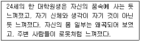
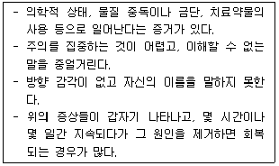
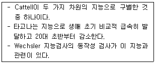
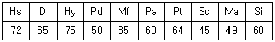
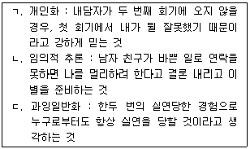
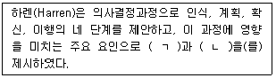
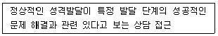

임상심리사-2급 (2022-03-05 기출문제)
1과목: 심리학개론
1. 임상심리학 연구방법 중 내담자와의 면접을 통해 증상과 경과를 체계적으로 연구하는 방법은?
- 실험연구
- 상관연구
- 사례연구
- 혼합연구
(정답률: 75%)

2. 성격이론과 대표적인 연구자가 잘못 짝지어진 것은?
- 정신분석이론 - 프로이드(Freud)
- 행동주의이론 - 로저스(Rogers)
- 인본주의이론 - 매슬로우(Maslow)
- 특질이론 - 올포트(Allport)
(정답률: 75%)
3. 기억 연구에서 집단이 회상한 수가 집단구성원 각각 회상한 수의 합보다 적은 것을 의미하는 것은?
- 책임감 분산
- 청크효과
- 스트룹효과
- 협력 억제
(정답률: 24%)
4. 여러 상이한 연령에 속하는 사람들로부터 동시에 어떤 특성에 대한 자료를 얻고, 그 결과를 연령 간 비교하여 발달적 변화과정을 추론하는 연구방법은?
- 종단적 연구방법
- 횡단적 연구방법
- 교차비교 연구방법
- 단기종단적 연구방법
(정답률: 66%)
5. 단순 공포증이 유사한 대상에게 확대되는 현상을 설명하는 학습원리는?
- 변별조건형성
- 자극 일반화
- 자발적 회복
- 소거
(정답률: 83%)
6. 실험장면에서 실험자가 조작하는 처치변인은?
- 독립변인
- 종속변인
- 조절변인
- 매개변인
(정답률: 60%)
7. 프로이드의 성격의 구조에 대한 설명으로 틀린 것은?
- 이드는 쾌락원칙을 따른다.
- 초자아는 항문기의 배변훈련 과정을 겪으면서 발달한다.
- 성격의 구조 가운데 가장 마지막으로 발달하는 체계가 초자아이다.
- 자아는 성격의 집행자로서, 인지능력에 포함된다.
(정답률: 62%)
8. Cattell의 성격이론에 관한 설명과 가장 거리가 먼 것은?
- 주로 요인분석을 사용하여 성격요인을 규명하였다.
- 지능을 성격의 한 요인인 능력특질로 보았다.
- 개인의 특정 행동을 설명할 수 있느냐에 따라 특질을 표면특질과 근원특질로 구분하였다.
- 성격특질이 서열적으로 조직화되어 있다고 보았다.
(정답률: 45%)
9. 성격을 정의할 때 고려하는 특징으로 가장 거리가 먼 것은?
- 시간적 일관성
- 환경에 대한 적응성
- 개인의 독특성
- 개인의 자율성
(정답률: 56%)
10. 인지학습이론에 대한 설명으로 틀린 것은?
- 형태주의는 공간적인 관계보다는 시간변인에 주로 관심을 갖는다.
- Tolman은 강화가 무슨 행동을 하면 어떤 결과가 일어날 것이란 기대를 확인시켜 준다고 보았다.
- 통찰은 해경 전에서 해결로 갑자기 일어나며 대개 ‘아하’ 경험을 하게 된다.
- 인지도는 학습에서 내적 표상이 중요함을 보여준다.
(정답률: 53%)
11. 에릭슨의 심리사회적 발달이론에서 노년기에 맞는 위기는?
- 고립감
- 열등감
- 단절감
- 절망감
(정답률: 67%)
12. 고전적 조건형성에 관한 설명으로 옳은 것은?
- 대부분의 정서적인 반응들은 고전적 조건형성을 통해 학습될 수 있다.
- 중립자극은 무조건 자극 직후에 제시되어야 한다.
- 행동변화의 효과를 거두기 위해서는 적절한 반응의 수나 비율에 따라 강화가 이루어져야 한다.
- 모든 자극에 대한 모든 반응은 연쇄(chaining)를 사용하여 조건형성을 할 수 있다.
(정답률: 34%)
13. 자신의 행동을 통해서 태도를 확인하고 이해하는 과정을 설명하는 이론은?
- 인지부조화이론
- 자기지각이론
- 자기고양편파이론
- 자기정체성이론
(정답률: 84%)
14. 집단사고가 일어나는 상황과 가장 거리가 먼 것은?
- 집단의 응집력이 높은 경우
- 집단이 외부 영향으로부터 고립된 경우
- 집단의 리더가 민주적인 경우
- 실행 가능한 대안이 부족하여 집단의 스트레스가 높은 경우
(정답률: 63%)
15. 어떤 사람의 행동을 보고 상황이나 외적 요인보다는 사람의 기질이나 내적 요인에 그 원인을 두려고 하는 것은?
- 고정관념
- 현실적 왜곡
- 후광효과
- 기본적 귀인오류
(정답률: 74%)
16. 의미망 모형에 관한 설명으로 틀린 것은?
- 많은 정보들은 의미망으로 조직화할 수 있고 의미망은 노드(node)와 통로(pathway)로 구성되어 있다.
- 모형의 가정을 어휘결정 과제로 검증할 수 있다.
- 버터가 단어인지를 판단하는데 걸리는 시간은 간호사보다 빵이라는 단어가 먼저 제시되었을 때 더 느리다.
- 활성화 확산 과정으로 설명할 수 있다.
(정답률: 80%)
17. 동조에 관한 설명으로 옳은 것은?
- 집단의 크기에 비례하여 동조의 가능성이 증가한다.
- 과제가 쉬울수록 동조가 많이 일어난다.
- 개인이 집단에 매력을 느낄수록 동조하는 경향이 더 높다.
- 집단에 의해서 완전하게 수용 받고 있다고 느낄수록 동조하는 경향이 더 크다.
(정답률: 67%)
18. 연구설계 시 내적 타당도를 위협하는 요인이 아닌 것은?
- 평균으로의 회귀
- 측정도구의 변화
- 피험자의 반응성
- 피험자의 학습효과
(정답률: 18%)
19. 기억에 관한 설명 중 옳지 않은 것은?
- 기억의 세 단계는 부호화, 저장, 인출이다.
- 각각기억은 매우 큰 용량을 가지고 있지만 순식간에 소멸한다.
- 외현기억은 무의식적이며, 암묵기억은 의식적이다.
- 부호화와 인출을 증진시키는 한 가지 방법은 심상을 사용하는 것이다.
(정답률: 68%)
20. 비율척도에 해당하는 것은?
- 성별
- 길이
- 온도
- 석차
(정답률: 49%)
2과목: 이상심리학
21. DSM-5에서 알코올사용장애 진단기준에 관한 설명으로 옳은 것은?
- 증상의 갯수로 알코올사용장애 심각도를 분류한다.
- 알코올로 인한 법적문제가 진단기준에 포함된다.
- 교차중독 현상이 진단기준에 포함된다.
- 음주량과 음주횟수가 진단기준에 포함된다.
(정답률: 57%)
22. 여성의 알코올 중독에 관한 설명으로 옳은 것은?
- 알코올 중독의 남녀 비율은 비슷한 수준이다.
- 여성은 유전적으로 남성보다 알코올 중독의 가능성이 더 높다.
- 여성 알코올 중독자들은 남성 알코올 중독자들보다 우울을 더 많이 경험하고 자살시도 횟수가 더 많다.
- 여성은 남성보다 체지방이 많기 때문에 술의 효과가 늦게 나타나고 대사가 빠르다.
(정답률: 68%)
23. 지속성 우울장애(기분저하증)의 진단기준에 관한 설명으로 틀린 것은?
- 우울 기간 동안 자존감 저하, 절망감 등의 2가지 증상이 나타난다.
- 순환성장애의 진단기준을 충족해야 한다.
- 조종 삽화, 경조증 삽화가 없어야 한다.
- 청소년에서는 기분이 과민한 상태로 나타나기도 한다.
(정답률: 58%)
24. 이상심리의 이론적 모형에 관한 설명으로 틀린 것은?
- 양극성 장애와 조현병은 유전을 비롯한 생물학적 요인에 영향을 받는다.
- 행동주의자들은 부적응 행동이 학습의 원리에 따라 형성된다고 제안하였다.
- 실존주의자들은 정신장애가 뇌의 생화학적 이상에 의해서 유발된다고 본다.
- 인지이론가들은 비합리적 신념과 역기능적 사고가 이상 행동에 영향을 준다고 본다.
(정답률: 63%)
25. 조현병 스펙트럼 및 기타 정신병적 장애에 해당하지 않는 것은?
- 순환성장애
- 조현양상장애
- 조현정동장애
- 단기 정신병적 장애
(정답률: 66%)
26. 사회불안장애에 대한 설명으로 가장 적합한 것은?
- 공포스러운 사회적 상황이나 활동상황에 대한 회피, 예기 불안으로 일상생활, 직업 및 사회적 활동에 영향을 받는다.
- 특정 뱀이나 공원, 동물, 주사 등에 공포스러워 한다.
- 터널이나 다리에 대해 공포반응이 일어나는 경우이다.
- 생리학적으로 부교감신경계의 활성 등의 생리적 반응에서 기인한다.
(정답률: 83%)
27. 신경발달장애에 관한 설명으로 틀린 것은?
- 투렛장애 진단 시 운동성 틱과 음성 틱은 항상 동시에 나타나야 한다.
- 생의 초기부터 나타나는 유아기 및 아동기장애와 관련이 있다.
- 비유창성이 청소년기 이후에 시작되면 성인기-발병 유창성 장애로 진단한다.
- 상동증적 운동장애는 특정 패턴의 행동을 목적 없이 반복하여 부적응적 문제가 초래된다.
(정답률: 69%)
28. Bleuler가 제시한 조현병(정신분열병)의 4가지 근본증상, 즉 4A에 해당하지 않는 것은?
- 감정의 둔마(affective blunting)
- 자폐증(autism)
- 양가감정(ambivalence)
- 무논리증(alogia)
(정답률: 26%)
29. 주의력 결핍 및 과잉행동장애(ADHD)에 관한 설명으로 틀린 것은?
- 학령전기에 보이는 주요 증상은 과잉행동이다.
- 않아 있도록 요구되는 상황에서 자리를 떠나는 것은 부주의 증상에 해당된다.
- 증상이 지속되면 적대적 반항장애로 동반이환할 가능성이 높다.
- 여성보다 남성에게 더 흔하게 나타난다.
(정답률: 62%)
30. 다음의 사례에 가장 적합한 진단명은?

- 해리성 정체성장애
- 해리성 둔주
- 이인화/비현실감 장애
- 착란장애
(정답률: 80%)
31. 주요 신경인지장애에 관한 설명으로 옳은 것은?
- 인지 기능의 저하 여부는 병전 수행 수준을 기준으로 삼지 않는다.
- 가족력이나 유전자 검사에서 원인이 되는 유전적 돌연변이의 증거가 있어야 한다.
- 기억 기능의 저하가 항상 나타난다.
- 알츠하이머병으로 인한 경우는 서서히 시작되고 점진적으로 진행된다.
(정답률: 76%)
32. 분리불안장애에 관한 설명으로 틀린 것은?
- 행동치료, 놀이치료, 가족치료 등을 통하여 호전될 수 있다.
- 부모의 양육행동, 아동의 유전적 기질, 인지행동적 요인 등이 영향을 미친다.
- 학령기 아동에서는 학교에 가기 싫어가거나 등교 거부로 나타난다.
- 성인의 경우 증상이 1개월 이상 나타날 때 진단될 수 있다.
(정답률: 76%)
33. B군 성격장애에 해당하지 않는 것은?
- 경계성 성격장애
- 강박성 성격장애
- 반사회성 성격장애
- 연극성 성격장애
(정답률: 33%)
34. 다음 장애 중 성기능부전에 포함되지 않는 것은?
- 사정지연
- 발기장애
- 마찰도착장애
- 여성극치감장애
(정답률: 48%)
35. 다음 증상들이 나타날 때 적절한 진단명은?

- 섬망
- 경도신경인지장애
- 주요신경인지장애
- 해리성 정체성장애
(정답률: 62%)
36. 전환장애에 관한 설명으로 틀린 것은?
- 전환장애 진단을 위해서는 증상이 신경학적 질병으로 설명되지 않아야 한다.
- 전환증상은 다양하지만 특히 흔한 것은 보이지 않음, 들리지 않음, 마비, 무감각증 등이다.
- 전환증상은 의학적 증거로 설명되지는 않고 있으며 환자들이 일시적인 어려움을 피하기 위하여 의도적으로 꾸며낸 것이다.
- 전환증상은 내적 갈등의 자각을 차단하는 일차 이득이 있고, 책임감으로부터 구제해주고 동정과 관심을 끌어내는 이차 이득이 있다.
(정답률: 66%)
37. 변태성욕장애에 해당하지 않는 것은?
- 관음장애
- 소아성애장애
- 노출장애
- 성별 불쾌감
(정답률: 84%)
38. 대인관계의 자아상 및 정동의 불안정성, 심한 충동성을 보이는 광범위한 행동 양상으로 인해 사회적 부적응이 초래되는 성격장애는?
- 의존성 성격장애
- 경계선 성격장애
- 편집성 성격장애
- 연극성 성격장애
(정답률: 72%)
39. 조현병에 관한 설명으로 맞는 것은?
- 망상, 환각, 와해된 언어 중 1개 증상이 반드시 포함되어야 한다.
- 양성 증상은 음성 증상보다 더 만성적으로 나타난다.
- 2개 이상의 영역에서 기능이 저하되어야 진단될 수 있다.
- 일반적으로 발병 연령의 성별 차이는 나타나지 않는다.
(정답률: 42%)
40. 주요 우울장애에 동반되는 세부 뷰형(양상)이 아닌 것은?
- 혼재상 양산 동반
- 멜랑콜리아 양산 동반
- 급속 순환성 양산 동반
- 비전형적 양산 동반
(정답률: 28%)
3과목: 심리검사
41. 교통사고 환자의 신경심리 검사에서 꾀병을 의심할 수 있는 경우는?
- 기억과제에서 쉬운 과제에 비해 어려운 과제에서 더 나은 수행을 보일 때
- 즉각기억과제와 지연기억과제의 수행에서 모두 저하를 보일 때
- 뚜렷한 병변이 드러나며 작의적인 반응을 보일 때
- 단기기억 점수는 정상범위나 다른 기억점수가 저하를 보일 때
(정답률: 47%)
42. MMPI-2 코드 쌍의 해석적 의미로 틀린 것은?
- 4-9 : 행동화적 경향이 높다.
- 1-2 : 다양한 신체적 증상에 대한 호소와 염려를 보인다.
- 2-6 : 전환증상을 나타낼 경우가 많다.
- 3-8 : 사고가 본질적으로 망상적일 수 있다.
(정답률: 62%)
43. 구 정엽의 병변과 가장 관련이 있는 장애는?
- 구성장애
- 시각양식의 장애
- 청각기능의 장애
- 고차적인 인지적 추론의 장애
(정답률: 26%)
44. 동일한 사람에게 교육수준이나 환경 및 질병의 영향 등과 같은 모든 가외변인을 통제한 상태에서 20세, 30세, 40세 때 편차점수를 사용하는 동일한 지능검사를 실시하였다면 지능이 어떻게 나타날 것인가?(오류 신고가 접수된 문제입니다. 반드시 정답과 해설을 확인하시기 바랍니다.)
- 점진적인 저하가 나타난다.
- 30세 때까지 상승하다가 그 이후 저하된다.
- 점진적인 상승이 나타난다.
- 변하지 않는다.
(정답률: 39%)
45. 다면적 인성검사(MMPI-2)에서 개인의 전반적인 에너지와 활동수준을 평가하며 특히 정서적 흥분, 짜증스런 기분, 과장된 자기 지각을 반영하는 척도는?
- 척도 1
- 척도 4
- 척도 6
- 척도 9
(정답률: 50%)
46. 지능검사와 그 활용에 관한 설명으로 틀린 것은?
- 학습과 진로지도 자료로 활용할 수 있다.
- 지능지수가 높다고 해서 반드시 높은 학업성취를 보이는 것은 아니다.
- 검사의 전체 소요시간은 여러 요인에 따라 달라질 수 있다.
- 웩슬러 지능검사의 특징 중 하나는 정신연령 개념을 도입한 것이다.
(정답률: 52%)
47. 다음에서 설명하고 있는 지능 개념은?

- 결정적 지능
- 다중 지능
- 유동적 지능
- 일반 지능
(정답률: 42%)
48. 특정 학업과정이나 직업에 대한 앞으로의 수행능력이나 적응을 예측하는 검사는?
- 적성검사
- 지능검사
- 성격검사
- 능력검사
(정답률: 81%)
49. 모집단에서 규준집단을 표집하는 방법과 가장 거리가 먼 것은?
- 군집표집(cluster sampling)
- 유충표집(stratified sampling)
- 비율표집(ratio sampling)
- 단순무선표집(simple random sampling)
(정답률: 28%)
50. 검사자가 지켜야 할 윤리적 의무로 옳지 않은 것은?
- 검사과정에서 피검자에게 얻은 정보에 대해 비밀을 보장할 의무가 있다.,
- 자신이 다루기 곤란한 어려움이 있을 때는 적절한 전문가에게 의뢰하여야 한다.
- 자신이 받은 학문적인 훈련이나 지도받은 경험의 범위를 벗어난 평가를 해서는 안된다.
- 피검자가 자해행위를 할 위험성이 있어도 비밀보장의 의무를 지켜야 하므로 누구에게도 알려서는 안 된다.
(정답률: 83%)
51. 전두엽 기능에 관한 신경심리학적 평가영역과 가장 거리가 먼 것은?
- 의욕(volition)
- 계획능력(planning)
- 목적적 행동(purposive action)
- 장기기억능력(long-term memory)
(정답률: 43%)
52. MMPI에서 2, 7 척도가 상승한 패턴을 가진 피검사의 특성으로 옳지 않은 것은?
- 행동화(acting-out) 성향이 강하다.
- 정신치료에 대한 동기는 높은 편이다.
- 자기비판 혹은 자기처벌적인 성향이 강하다.
- 불안, 긴장, 과민성 등 정서적 불안 상태에 놓여 있다.
(정답률: 54%)
53. 다면적 인성검사에 관한 설명으로 틀린 것은?
- 표준화된 규준을 가지고 있다.
- 수검태도와 검사결과의 타당성을 확인하는 척도가 있다.
- MMPI의 임상척도와 MMPI-2의 기본 임상척도의 수는 동일하다.
- 임상척도 간에 중복되는 문항이 적어서 진단적 변별성이 높다.
(정답률: 54%)
54. 지능을 일반요인과 특수요인으로 구분한 학자는?
- 스피어만(C.Spearman)
- 써스톤(L. Thurstone)
- 케텔(R. Cattell)
- 길포드(J. Guiford)
(정답률: 56%)
55. 검사의 종류와 검사구성방법을 짝지은 것으로 가장 적합하지 않은 것은?
- 16PF - 요인분석에 따른 검사구성
- CPI - 경험적 준거에 따른 검사구성
- MMPI - 경험적 준거방법
- MBTI - 합리적, 경험적 검사구성의 혼용
(정답률: 48%)
56. 노인 집단의 일상생활 기능에 대한 양상 및 수준을 평가하기에 가장 적합한 심리검사는?
- MMPI-2
- K-VMI-6
- K-WAIS-IV
- K-Vineland-Ⅱ
(정답률: 52%)
57. 발달검사를 사용할 때 고려해야 할 사항과 가장 거리가 먼 것은?
- 일반적인 기능적 분석만 사용해야 한다.
- 규준에 의한 발달적 비교가 가능해야 한다.
- 다중기법적 접근을 취해야 한다.
- 경험적 타당한 측정도구를 사용해야 한다.
(정답률: 66%)
58. 문장완성검사에 대한 설명으로 틀린 것은?
- 가족, 이성관계 등 문항의미와 관련하여 이들 문항 세트를 함께 고려하여 해석하는 것이 도움이 된다.
- Rapport 등(1968)은 형식적 면에서 연상의 장애를 ‘근거리 반응’과 ‘원거리 반응’으로 개념화하여 설명하고자 했다.
- 국내에서 출판되고 있는 Sacks의 문장완성 검사는 아동용, 청소년용, 성인용으로 구분되어 있다.
- 누락된 문항이라 하더라도 중요한 가설을 형성할 수 있다는 점에서 주의 깊게 검토해야 한다.
(정답률: 42%)
59. K-WAIS-IV에서 개념형성능력을 측정하는 소검사는?
- 차례맞추기
- 공통성문제
- 이해문제
- 빠진곳 찾기
(정답률: 40%)
60. 말의 유창성이 떨어지고 더듬거리는 말투, 말을 길게 하지 못하고 어조나 발음이 이상한 현상 등을 보이는 실어증은?
- 브로카 실어증
- 베르니케 실어증
- 초피질성 감각 실어증
- 전도성 실어증
(정답률: 19%)
4과목: 임상심리학
61. 내담자를 평가할 때 문제행동의 선행조건, 환경적 유인가, 보상의 대체원, 귀인방식과 같은 요소를 중요하게 여기는 평가방법은?
- 정신역동적 평가
- 인지행동적 평가
- 다축분류체계 평가
- 기술지향적 평가
(정답률: 62%)
62. 인지치료에서 강조하는 자동적 자기파괴 인지 중 파국화에 해당하는 것은?
- 그 프로젝트가 성공하지 못한 것은 나 때문이다.
- 나는 완벽해져야 하고 나약함을 보여서는 안된다.
- 나는 성공하거나 실패하거나 둘 중 하나이다.
- 이 일이 잘되지 않으면 다시는 이 일과 같은 일은 할 수 없을 것이다.
(정답률: 59%)
63. 다음 30대 여성의 다면적 인성검사 MMPI-2 결과에 대한 일반적 해석으로 적절한 것은?

- 스트레스 상황에서 신체증상이 두드러지고 회피적 대처를 할 소지가 크다.
- 반사회적 행동을 보일 가능성이 크다.
- 외향적이고 과도하게 에너지가 항진되어 있기 쉽다.
- 망상, 환각 등의 정신증적 증상이 나타나기 쉽다.
(정답률: 72%)
64. 공식적인 임상심리학의 기원으로 보는 역사적 사건은?
- Wundt의 심리실험실 개설
- Witmer의 심리클리닉 개설
- Binet의 지능검사 개발
- James의 ‘심리학의 원리’ 출판
(정답률: 42%)
65. Wolpe의 체계적 둔감법을 적용하기에 가장 적합한 내담자는?
- 적절한 대처능력이 떨어지고 일반상황에 심각한 불안을 보이는 내담자
- 적절한 대처능력이 있으나 특정상황에 심각한 불안을 보이는 내담자
- 적절한 대처능력이 있으나 일반상황에 심각한 불안을 보이는 내담자
- 적절한 대처능력이 떨어지고 특정상황에 심각한 불안을 보이는 내담자
(정답률: 65%)
66. 내담자의 말과 행동에서 표현된 기본적인 감정, 생각 및 태도를 상담자가 다른 참신한 말로 부연해주는 것은?
- 명료화
- 반영
- 직면
- 해석
(정답률: 49%)
67. 행동평가 방법에 관한 설명으로 틀린 것은?
- 자연관찰은 참여자가 아닌 관찰자가 환경 내에서 일어나는 참여자의 행동을 관찰하고 기록하는 방법이다.
- 유사관찰은 제한이 없는 환경에서 관찰하는 방법이다.
- 자기관찰은 자신이 개인과 환경간의 상호작용에 관한 자료를 수집하도록 한다.
- 참여관찰은 관찰하고자 하는 개인이 자연스러운 환경에 관여하면서 기록하는 방식이다.
(정답률: 68%)
68. 임상심리학자는 내담자와 이중관계를 갖지 말아야 한다. 이와 가장 관련이 깊은 윤리원칙은?
- 성실성
- 의무성
- 유능성
- 책임성
(정답률: 32%)
69. 위치감각과 공간적 회전 등의 개별적인 신체 표상과 관련이 있는 대뇌 영역은?
- 전두엽
- 후두엽
- 측두엽
- 두정엽
(정답률: 53%)
70. 바람직한 행동을 한 아동에게 그 아동이 평소 싫어하던 화장실 청소를 면제해 주었더니, 바람직한 행동이 증가했다면 이는 어떤 유형의 조작적 조건 형성에 해당하는가?
- 정적 강화
- 부적 강화
- 정적 처벌
- 부적 처벌
(정답률: 72%)
71. 정신건강 자문 중 점심시간이나 기타 휴식시간 동안에 임상사례에 대해 동료들에게 자문을 요청하는 형태는?
- 내담자-중심 사례 자문
- 피자문자-중심 사례 자문
- 비공식적인 동료집단 자문
- 피자문자-중심 행정 자문
(정답률: 27%)
72. 다음 중 자연관찰법의 특징이 아닌 것은?
- 시간과 비용이 많이 든다.
- 비밀이 보장된다.
- 자신이 관찰된다는 것을 알았을 때 다르게 행동한다.
- 관찰은 편파될 수 있다.
(정답률: 25%)
73. 강박장애로 치료 중인 고3 학생에게 K-WAIS-IV를 실시한 결과 다른 소검사보다 상식, 어휘문제의 점수가 유의하게 높았다. 이 검사 결과로 가정해 볼 수 있는 이 학생의 심리적 특성으로 옳은 것은?
- 높은 공간지각력
- 높은 주지화 경향
- 주의력 저하
- 현실검증력 손상
(정답률: 57%)
74. 심리상담 및 심리치료의 과정에서 나타나는 현상과 가장 거리가 먼 것은?
- 내담자는 상담자가 아무런 요구 없이 인간으로서의 관심만을 베푼다는 것을 경험한다.
- 상담관계에서 내담자는 처음부터 새로운 방식으로 반응하고 행동하게 된다.
- 상담장면에서는 일반적이고 추상적인 자료보다는 그 상황에서의 실제행동을 다룬다.
- 치료유형에 차이가 있음에도 불구하고 심리치료에는 공통요인이 작용한다.
(정답률: 62%)
75. 초기 임상심리학자와 그의 활동으로 바르게 짝지어진 것은?
- Witmer - g지능 개념을 제시했다.
- Binet - Army Alpha 검사를 개발했다.
- Spearman - 정신지체아 특수학교에서 심리학자로 활동했다.
- Wechsler - 지능검사를 개발했다.
(정답률: 54%)
76. 행동의학에서 주로 다루는 주제로 가장 적합한 것은?
- 공황발작
- 외상 후 스트레스 장애
- 조현병의 음성증상
- 만성통증 관리
(정답률: 19%)
77. 다음 중 유관학습의 가장 적합한 예는?
- 욕설을 하지 않게 하기 위해 욕을 할 때마다 화장실 청소하기
- 손톱 물어뜯기를 줄이기 위해 손톱에 쓴 약을 바르기
- 충격적 스트레스 사건이 떠오를 때 ‘그만!’이라는 구호 외치기
- 뱀에 대한 공포가 있는 사람에게 뱀을 만지는 사람의 영상 보여주기
(정답률: 35%)
78. 환자가 처방한 대로 약을 잘 복용하고, 의사의 치료적 권고를 준수하게 하기 위한 가장 적절한 방법은?
- 준수하지 않을 때 불이익을 준다.
- 의사가 권위적이고 단호하게 지시한다.
- 모든 책임을 환자에게 위임한다.
- 치료자가 약의 효과 등에 대해 친절하고 상세하게 설명한다.
(정답률: 34%)
79. 환자와의 초기 면접에서 면접자가 주로 탐색하는 정보의 내용이 아닌 것은?
- 환자의 증상과 주 호소, 도움을 요청하게 된 이유
- 최근 환자의 적응기제를 혼란시킨 스트레스 사건의 유무
- 면접과정에서 드러난 고통스런 경험에 대한 이해와 심리적 격려
- 기질적 장애의 가능성 및 의학적 자문의 필요성에 대한 탐색
(정답률: 43%)
80. 심리평가 도구 중 최초 개발된 이후에 검사의 재료가 변경된 적이 없는 것은?
- Wechsler 지능검사
- MMPI 다면적 인성검사
- Bender-Gestalt 검사
- Rorschach 검사
(정답률: 69%)
5과목: 심리상담
81. 벡(A. Beck)이 제시한 인지적 오류와 그 내용이 옳은 것을 모두 고른 것은?

- ㄱ, ㄴ
- ㄱ, ㄷ
- ㄴ, ㄷ
- ㄱ, ㄴ, ㄷ
(정답률: 54%)
82. 청소년 지위비행에 해당하는 것은?
- 음주
- 금품갈취
- 도벽
- 인터넷 중독
(정답률: 53%)
83. 다음 ()안에 들어갈 내용을 옳게 나열한 것은?

- ㄱ : 자아개념, ㄴ : 의사결정유형
- ㄱ : 자아존중감, ㄴ : 정서적 자각
- ㄱ : 자아효능감, ㄴ : 진로성숙도
- ㄱ : 정서조절, ㄴ : 흥미유형
(정답률: 57%)
84. 단기상담에 적합한 내담자와 가장 거리가 먼 것은?
- 위급한 상황에 있는 군인
- 중요 인물과의 상실을 경험한 자
- 급성적으로 발생한 문제로 고통받는 내담자
- 상담에 대한 동기가 낮은 내담자
(정답률: 70%)
85. 개인의 일상적 경험구조, 특히 소속된 분야에서 특별하다고 간주되던 사람들의 일상적 경험구조를 상세하게 연구하고자 하는 목적에서 생겨난 심리상담의 핵심적인 전제조건에 해당하는 것은?
- 매순간 새로운 자아가 출현하고 새로운 경험을 할 때마다 우리는 새로운 위치에 있게 된다.
- 어린 시절의 창조적 적응은 습관적으로 알아차림을 방해한다.
- 내담자로 하여금 문제를 해결하는 것뿐만 아니라 그 문제를 유지시키는 보다 근본적인 기술을 변화시키도록 돕는 것이 중요하다.
- 개인은 마음, 몸, 영혼으로 이루어진 체계이며, 삶과 마음은 체계적 과정이다.
(정답률: 19%)
86. 다음은 어떤 상담에 관한 설명인가?

- 가족체계상담
- 정신분석상담
- 해결중심상담
- 인간중심상담
(정답률: 42%)
87. 심리검사 결과 해석시 주의할 사항과 가장 거리가 먼 것은?
- 검사해석의 첫 단계는 검사 매뉴얼을 알고 이해하는 것이다.
- 내담자가 받은 검사의 목적과 제한점 및 장점을 검토해 본다.
- 결과에 대한 구체적 예언보다는 오히려 가능성의 관점에서 제시되어야 한다.
- 검사결과로 나타난 장점이 주로 강조되어야 한다.
(정답률: 59%)
88. 주요 상담이론과 대표적 학자들의 연결이 옳지 않은 것은?
- 정신역동이론 - Freud, Jung, Kernberg
- 인본(실존)주의이론 - Rogers, Frankl, Yalom
- 행동주의이론 - Watson, Skinner, Wolpe
- 인지치료이론 - Ellos, Beck, Perls
(정답률: 38%)
89. Satir의 의사소통 모형 중 스트레스를 다룰 때 자신의 스트레스를 무시하고 다른 사람에게 힘을 넘겨주며 모두에게 동의하는 말을 하는 것은?
- 초이성형
- 일치형
- 산만형
- 회유형
(정답률: 54%)
90. 성 피해자 심리상담 초기단계의 유의사항으로 옳지 않은 것은?
- 치료관계 형성에 힘써야 한다.
- 상담자가 상담 내용의 주도권을 가져야 한다.
- 성폭력 피해로 인한 합병증이 있는지 묻는다.
- 성폭력 피해의 문제가 없다고 부정을 하면 일단 수용해준다.
(정답률: 80%)
91. 학업상담에 있어 지능에 관한 설명으로 틀린 것은?
- 지능에 대한 학습자가 주관적인 인식은 학습 태도와 관련이 없다.
- 지능지수는 같은 연령대 학생들 간의 상대적 위치를 의미한다.
- 지능검사는 스탠퍼드-비네 검사, 웩슬러검사, 카우프만 검사 등이 있다.
- 지능점수를 통해 학생의 인지적 강점 및 약점을 파악할 수 있다.
(정답률: 56%)
92. 상담 초기 단계에서 사용하기에 가장 적합한 기법은?
- 경청
- 자기개방
- 피드백
- 감정의 반영
(정답률: 77%)
93. 생애기술 상담이론에서 기술언어(skills language)에 해당하는 것은?
- 내담자가 어떻게 생각하고 느끼는가를 의미하는 것이다.
- 내담자가 어떤 외현적 행동을 하는가를 의미하는 것이다.
- 내담자 자신의 책임감 있는 삶을 의미하는 것이다.
- 내담자의 행동을 설명하고 분석하기 위해 사용하는 것을 의미하는 것이다.
(정답률: 61%)
94. 알코올중독 가정의 성인아이(Adult Child)에 관한 특성이 아닌 것은?
- 처음부터 끝까지 일을 완수하는데 어려움이 있다.
- 권위 있는 사람에게 친밀감을 느낀다.
- 지속적으로 타인의 인정과 확인을 받고 싶어 한다.
- 자신을 평가절하 한다.
(정답률: 53%)
95. 병적 도박에 관한 설명으로 틀린 것은?
- 대개 돈의 액수가 커질수록 더 흥분감을 느끼며 흥분감을 느끼기 위해 액수를 더 늘린다.
- 도박행동을 그만두거나 줄이려고 시도할 때 안절부절 못하거나 신경이 과민해진다.
- 병적 도박은 DSM-5에서 반사회성 성격장애로 분류된다.
- 병적 도박은 전형적으로 남자는 초기 청소년기에, 여자는 인생의 후기에 시작되는 경우가 많다.
(정답률: 66%)
96. 집단상담에서 침묵 상황에 대한 효과적 개입으로 틀린 것은?
- 회기 초기에 오랜 침묵을 허용하는 것은 지도력 발휘가 안된 것이다.
- 생산적으로 여겨지는 침묵 상황에서 말하려는 집단원에게 기다리라고 제지할 수 있다.
- 말하고 싶으나 기회를 잡지 못하는 집단원에게 말할 기회를 준다.
- 대리학습이나 경험이 되므로 침묵하는 집단원이 집단 내내 말하지 않더라도 그대로 놔둔다.
(정답률: 74%)
97. 자살로 인해 가까운 사람을 잃은 자살 생존자에 관한 설명으로 틀린 것은?
- 분노는 자살생존자가 겪는 흔한 감정 중 하나이다.
- 자살생존자는 스스로를 비난하기 때문에 고통 받는다.
- 자살생존자에게 상실에 대한 경험을 이야기하게 하는 것은 과거의 상황을 재경험하게 하므로 피하는 것이 좋다.
- 자살생존자는 종종 자살에 관한 사회문화적 낙인에 대처하는 데 부담감을 느끼게 된다.
(정답률: 78%)
98. 인간중심상담 이론에 관한 설명으로 틀린 것은?
- 가치의 조건화는 주요 타자로부터 긍정적 존중을 받기 위해 그들이 원하는 가치와 기준을 내면화하는 것이다.
- 자아는 성격의 조화와 통합을 위해 노력하는 원형이다.
- 현재 경험이 자기개념과 불일치할 때 불안을 경험하게 된다.
- 실현화 경향성은 자기를 보전, 유지하고 향상시키고자 하는 선천적 성향이다.
(정답률: 38%)
99. 행동주의 상담의 한계에 관한 설명으로 틀린 것은?
- 상담과정에서 감정과 정서의 역할을 강조하지 않는다.
- 내담자의 문제에 대한 통찰이나 심오한 이해가 불가능하다.
- 고차원적 기능과 창조성, 자율성을 무시한다.
- 상담자와 내담자의 관계를 중시하여 기술을 지나치게 강조한다.
(정답률: 67%)
100. 키츠너(Kitchener)가 제시한 상담의 기본적 윤리원칙 중 상담자가 내담자와 맺은 약속을 잘 지키며 믿음과 신뢰를 주는 행동을 하는 것은?
- 자율성(autonomy)
- 무해성(nonmaleficence)
- 충실성(fidelity)
- 공정성(justice)
(정답률: 77%)